Partenaires et associations
Le GIAC agit avec les institutions de la formation et les organisations professionnelles du secteur.


Partenaires
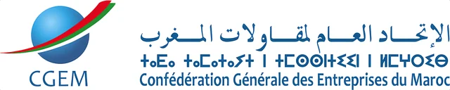
CGEM, Confédération Générale des Entreprises du Maroc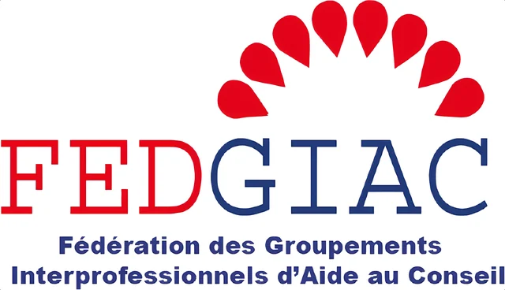
FEDGIAC, Fédération des Groupements Interprofessionnels d’Aide au Conseil- Ministère de l’Éducation Nationale et de la Formation Professionnelle
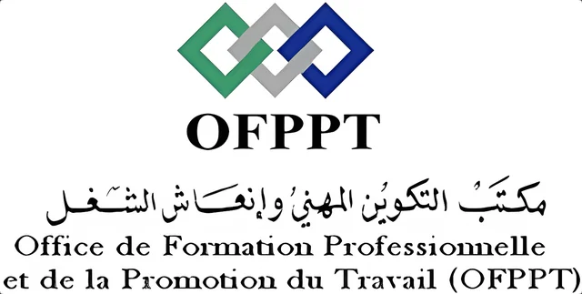
OFPPT, Office de la Formation Professionnelle et de la Promotion du Travail
Fédérations et associations
Sélection de membres : le réseau compte 10 fédérations et 15 associations professionnelles.
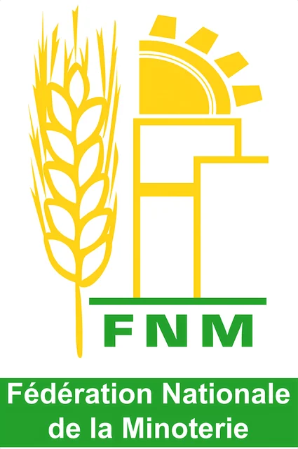
FNM, Fédération Nationale de la Minoterie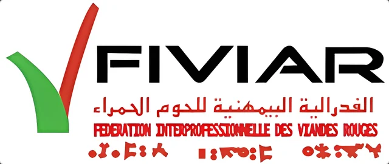
FIVIAR, Fédération Interprofessionnelle des Viandes Rouges- FISA Maroc
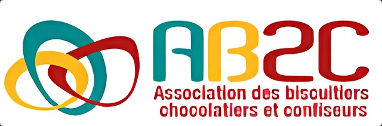
AB2C, Association des biscuitiers, chocolatiers et confiseurs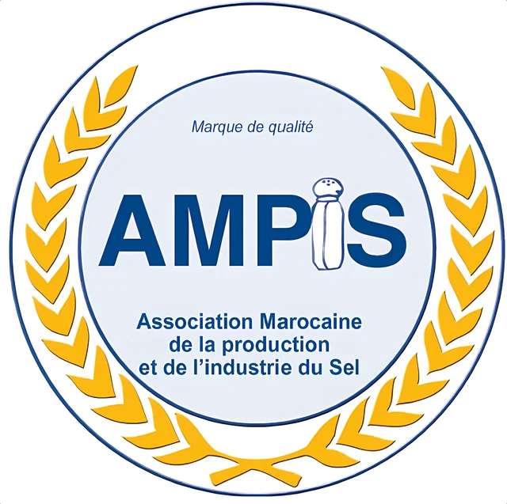
AMPIS, Association Marocaine de la production et de l’industrie du Sel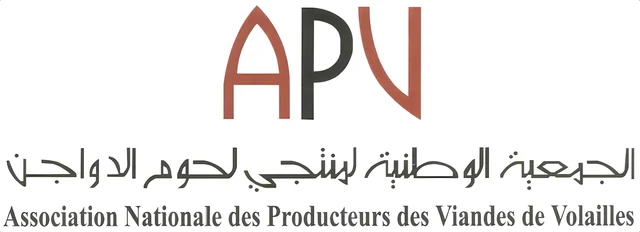
APV, Association Nationale des Producteurs des Viandes de Volailles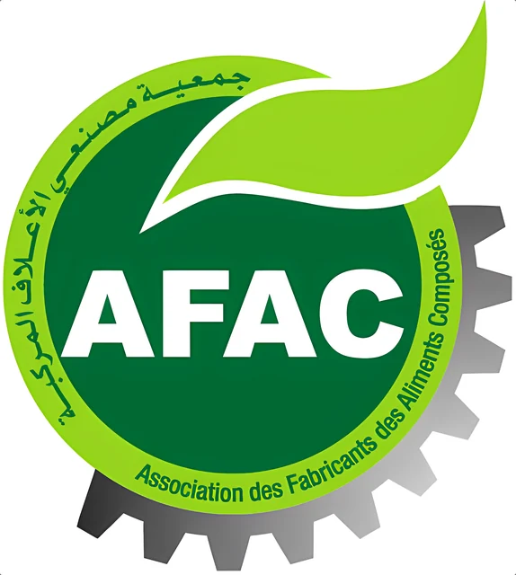
AFAC, Association des Fabricants des Aliments Composés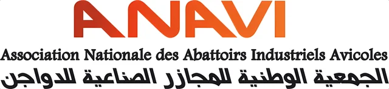
ANAVI, Association Nationale des Abattoirs Industriels Avicoles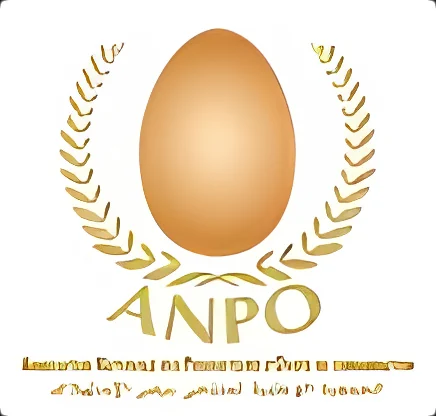
ANPO, Association Nationale des Producteurs d’Œufs de consommation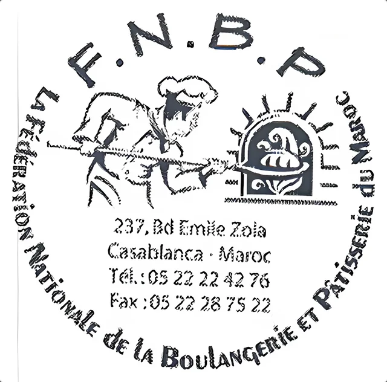
FNBP, Fédération Nationale de la Boulangerie et Pâtisserie du Maroc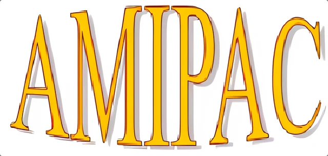
AMIPAC